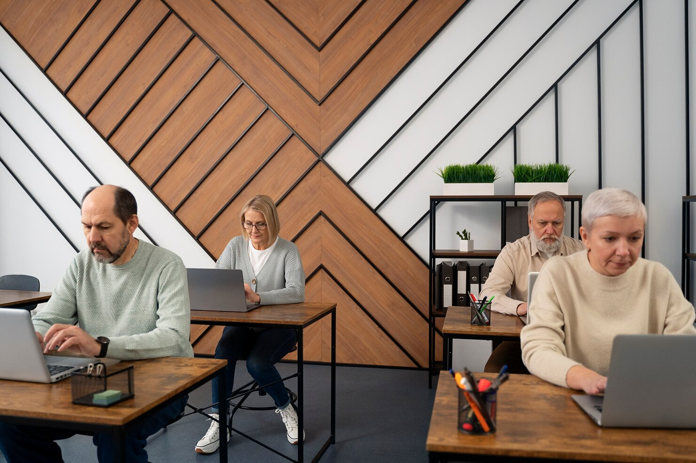
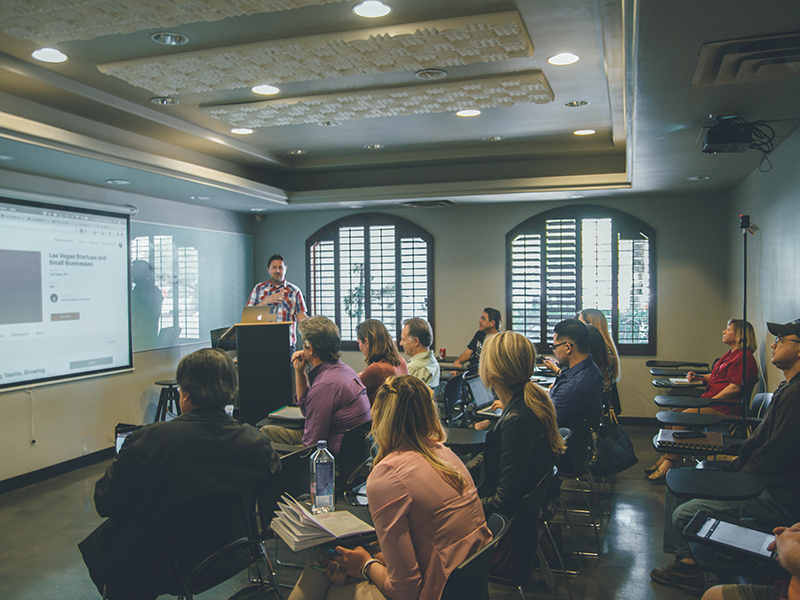

Digital hverdag
Bliv fortrolig med computer, filer, e-mail og de digitale tjenester, du bruger hver dag.
For begyndereKurser hos IT-Workshoppen
Bliv klogere på de digitale værktøjer, du møder i hverdagen. Vi forklarer tingene i et sprog, der er til at forstå.
Se kursusemner
Et udvalg af emner
Her er eksempler på emner, vi kan arbejde med. Indhold og niveau tilpasses deltagerne.
Bliv fortrolig med computer, filer, e-mail og de digitale tjenester, du bruger hver dag.
For begyndereFå en introduktion til, hvordan hjemmesider bygges, og prøv kræfter med HTML og CSS.
For nysgerrige begyndereLær at bruge fælles dokumenter, online møder og andre værktøjer til samarbejde.
For teams og enkeltpersoner
Undervisning i øjenhøjde
Vi tror på, at de bedste spørgsmål er dem, der bliver stillet. Derfor kombinerer vi tydelige forklaringer med praktiske øvelser og tid til at prøve selv.
Tal med os om et kursus ↗Vi hjælper gerne med at finde et forløb, der passer til dig.
Kontakt os